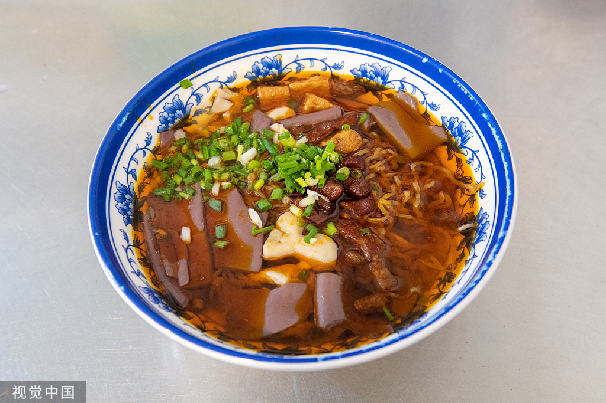
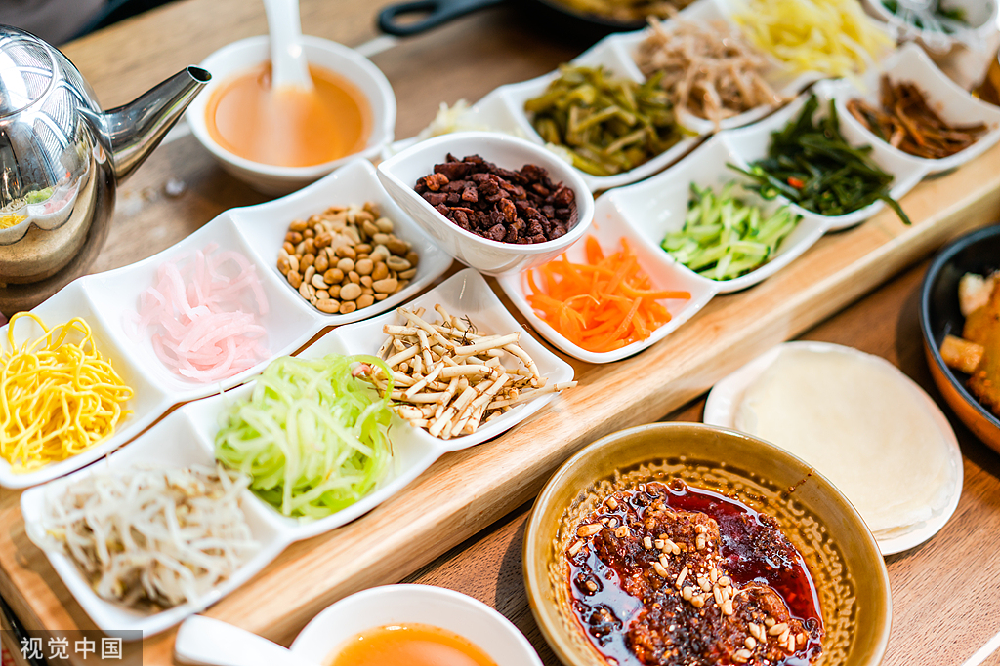
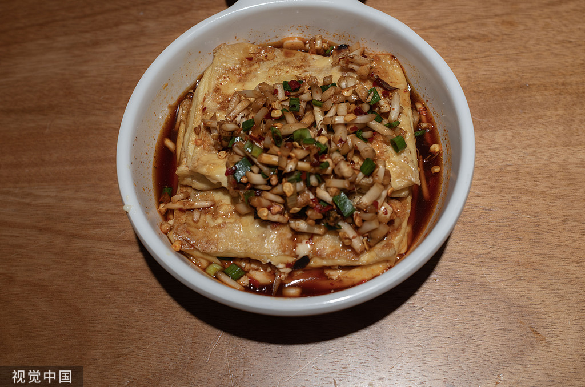
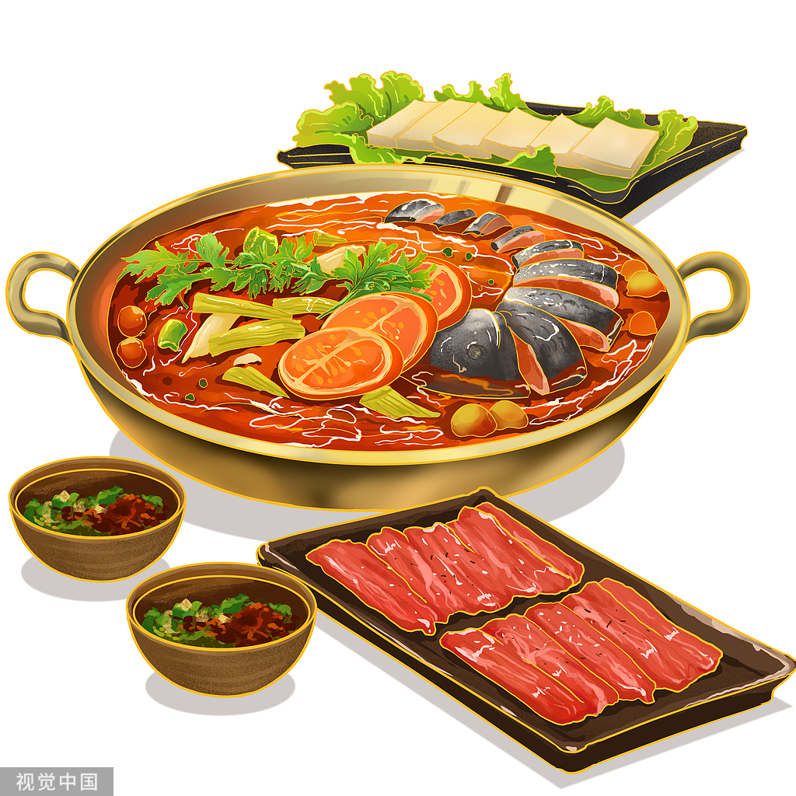
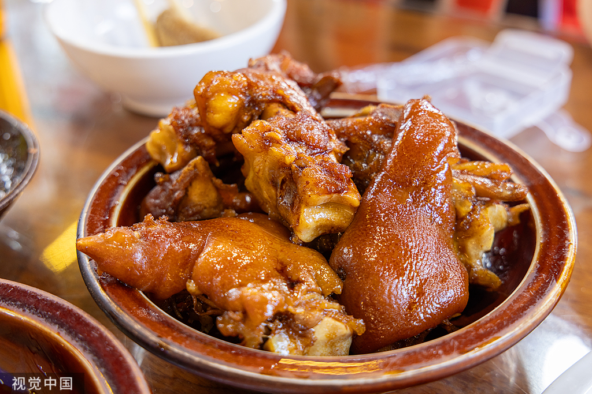

贵州特色美食
品尝当地美食，体验贵州风味
肠旺面
又称肠益面，是贵州极负盛名的一种汉族风味面食。在贵州众多的小吃中，以色、香、味“三绝”而著称，具有血嫩、面脆、辣香、汤鲜的风味和口感，以及红而不辣、油而不腻、脆而不生的特点。肠”即猪大肠，“旺”则是猪血，加上面条，三者相加便相得益彰。 “肠旺”是“常旺”的谐音，寓意吉祥。贵阳市区内各小吃街均有卖。

丝娃娃
是一种贵阳街头最常见的小吃。乍听这名字，真吓人一跳，如同《西游记》中唐僧面对高徒拿来娃娃状的长生果大喊：“罪过，罪过！”丝娃娃因其形状上大下小犹如裹在襁褓中的婴儿，故名。贵阳丝娃娃用米面粉做成薄氏状小圆饼烙熟，将萝卜丝、折耳根、绿豆芽、海带丝、炸黄豆、糊辣椒等多种佐料，包在面皮裹成小卷食用，别名素春卷。口感绵香四溢，极富特色。

恋爱豆腐果
是贵阳名小吃之一。以其名奇特、意味深长、风味别致为特色。将豆腐切成小块，经适量碱水发酵后，放在擦有食油的有眼铁片或铁网上，用糠壳、锯木屑小火烘烤。待烤至外壳焦黄油亮、像吹进气一样鼓起来时，剖开填进用辣椒、酱油、麻油、木姜籽油、葱花、苦蒜、折耳根等混合而成的"蘸水"、趁热吃下、辣香嫩烫、咸鲜爽口。

酸汤鱼
苗族独有的食品，入口酸味鲜美，辣劲十足，令人胃口大开。一般是先加入特产糟辣椒和本地许多有营养的中草药，借番茄酸烹出自然酸汤，然后将清洗的活鱼下锅煮。酸汤是用烧开的米泔水酿制而成的，上好的酸汤应为白色。清酸汤味酸而清香，但醇厚味略差些，另加上用西红柿泡制的红酸汤，味道就更加完美了。如再加些黄豆芽、小竹笋和野葱作辅料，风味就更加独特。

青岩卤猪脚
又称“状元蹄”，是以猪蹄为主料的贵州名菜。其名源于清末青岩人赵以炯赴京赶考时常去青岩北门街夜市吃卤猪蹄，后高中光绪十二年（1886年）云贵首位状元，当地遂将卤蹄与“状元”文化结合，成为纪念赵以炯的文化符号。菜品选用肥大猪蹄，经老卤配以十余种香料文火慢煨，成品皮红肉润、软糯弹牙，需蘸糊辣椒、双花醋、姜葱调制的蘸水食用，传统吃法为手抓啃食。作为青岩古镇标志性美食，其制作技艺与状元传说深度融合，现随文旅发展普及至贵州各地，并衍生出标准化生产产业链
